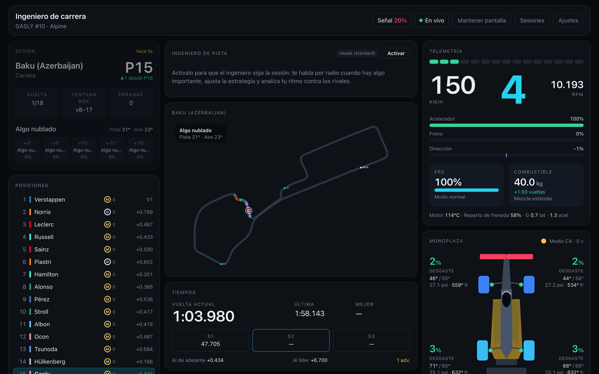
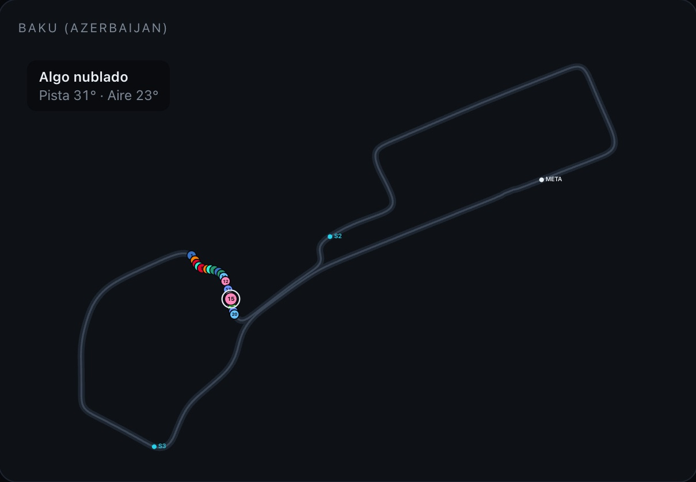
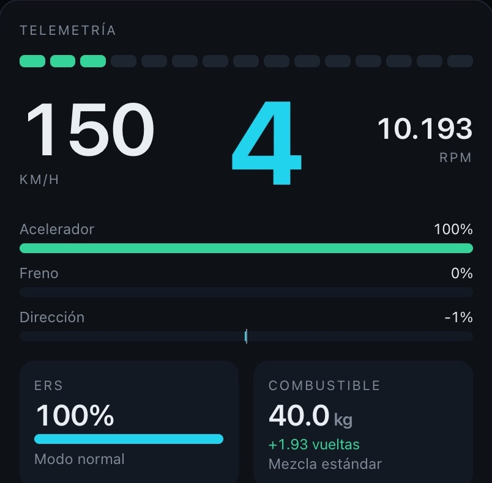

Estrategia, telemetría y una IA que lee cada dato de tu auto y de toda la grilla. Vos manejás. Nosotros pensamos la carrera.

Plan A: una parada. Medios hasta la 12 y duros hasta el final.
Mira todo lo que vos no podés mirar a 300 km/h, y te habla sólo cuando importa.
Arma la estrategia antes de la largadaParadas, compuestos y ventanas, con tu ritmo real.
Ve venir la lluvia antes que vosTe dice cuándo entrar y con qué gomas salir.
Aprende en cada sesiónLo que corriste en prácticas llega a la carrera.
Velocidad, pedales, gomas, ERS, combustible y toda la grilla sobre el trazado. En la tablet, la notebook o la tele al lado del volante.


Todo queda grabado. Volvé a ver cualquier sesión, compará vueltas y preguntale al ingeniero dónde se te escapó el tiempo.
Elegí dónde jugás y dónde querés analizar tus carreras.
127.0.0.1 y puerto 20777.https://f1-api.imanzanastore.com.ar/mcpNecesitás un plan de Claude que admita conectores personalizados.
https://f1-api.imanzanastore.com.ar/mcpNecesitás un plan de ChatGPT con modo desarrollador.
En dos minutos tenés a tu ingeniero en la radio.
¿Ya lo tenés? Abrí el dashboardPara PlayStation, Xbox o PC.
Windows: si frena el archivo, Propiedades del .zip → Desbloquear. Mac: si no abre, Ajustes del Sistema → Privacidad y seguridad → Abrir igualmente.